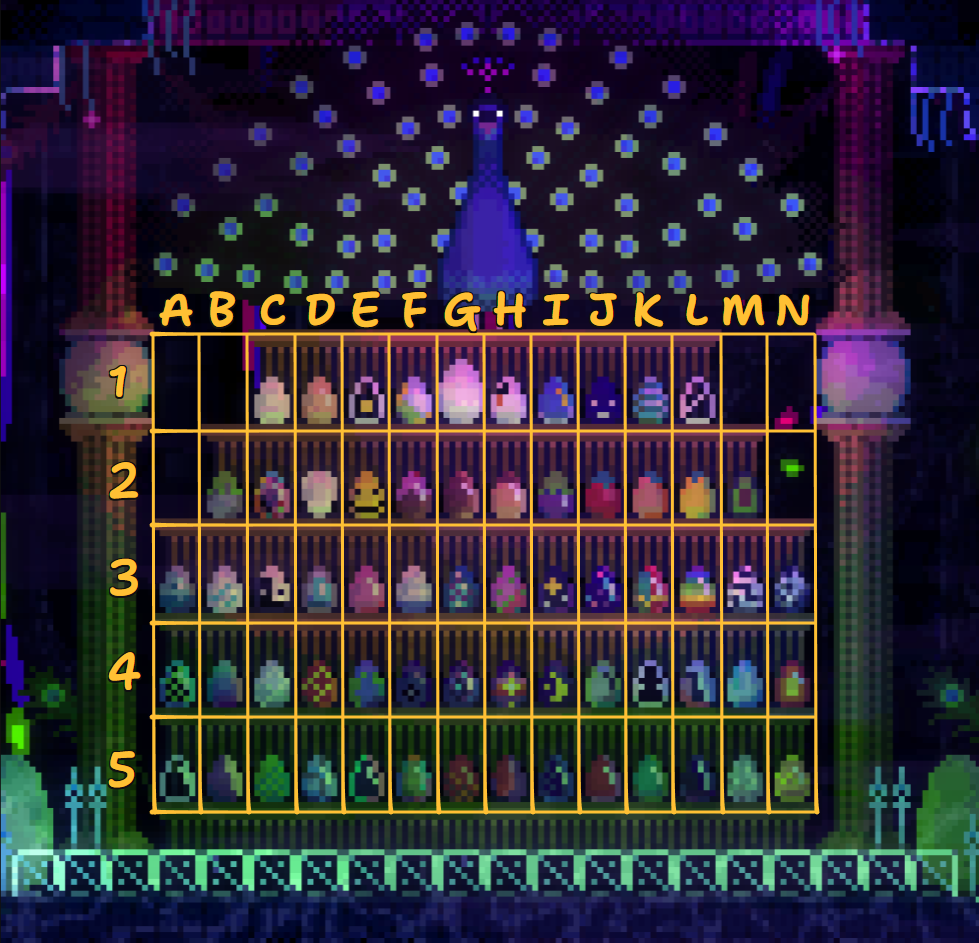

Главный герой, похожий на фрикадельку, вылезает из какого-то бутона и может идти куда угодно. На пути встречаются белки, коты, собаки, горностаи, но все они разбегаются в ужасе при виде игрока (а некоторые хотят его съесть)... Это действительно колодец с животными, как утверждает название игры, но что конкретно это за место — непонятно.
Загадочность всего. Здесь всё загадочно, а потому всё хочется изучать ♡

Отсутствие правильного способа пройти игру. Можно отправиться направо, можно — налево, можно воспользоваться лестницей или, наоборот, свалиться в пропасть.
Множество загадок и секретов. Одни головоломки просты — нажми на кнопку и получишь результат; другие заставят пораскинуть мозгами, побуждая мыслить за пределами доступного экрана.

https://store.steampowered.com/app/813230/ANIMAL_WELL/

Пока что мне больше нечего добавить, поэтому вот отрывок из стихотворения Р.Л. Стивенсона
"Вересковый мёд"
Лето в стране настало,
Вереск опять цветет.
Но некому готовить
Вересковый мед.
Ждём Hollow Knight: Silksong ?
Однажды я, Чжуан Чжоу, увидел себя во сне бабочкой – счастливой бабочкой, которая порхала среди цветков в свое удовольствие и вовсе не знала, что она – Чжуан Чжоу. Внезапно я проснулся и увидел, что я – Чжуан Чжоу. И я не знал, то ли я Чжуан Чжоу, которому приснилось, что он – бабочка, то ли бабочка, которой приснилось, что она – Чжуан Чжоу. А ведь между Чжуан Чжоу и бабочкой, несомненно, есть различие. Вот что такое превращение вещей!
(Из книги "Чжуан-цзы", гл. 2 — "О том как вещи друг друга уравновешивают")